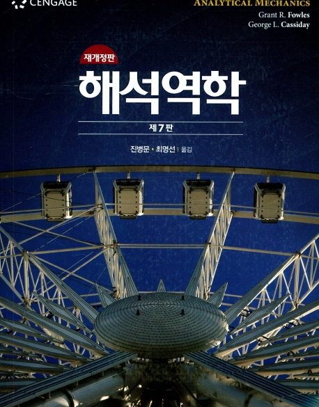

고전역학 추천도서

목 차
- 기본 개념: 벡터
- 뉴턴 역학: 입자의 직선운동
- 진동
- 입자의 3차원 운동
- 비관성 기준계
- 중력과 중심력
- 입자계의 동역학
- 강체역학: 평면형 운동
- 강체의 3차원 운동
- 라그랑주 역학
- 진동계의 동역학
본 저서를 추천하는 이유: 본 고전역학 책은 대학 학부생이 알아야 할 뉴턴 역학의 모든 것을
다루었고, 학부 수준의 물리학에 필요한 수학인 벡터해석학과 미분방정식을 모른다고 해도 1학
년 때 배운 미적분학으로 충분하고, 또 1단원에 필요한 벡터해석학의 내용을 기술해 미적분학만
을 알고있어도 전체적으로 읽는데 지장이 없어서 고전역학을 공부하는데 큰 도움이 될 수 있을
것으로 기대된다.